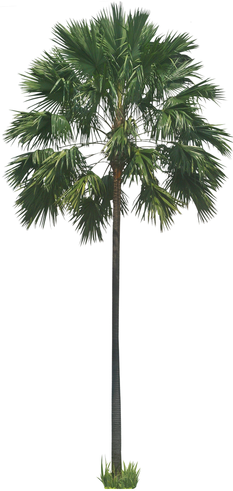
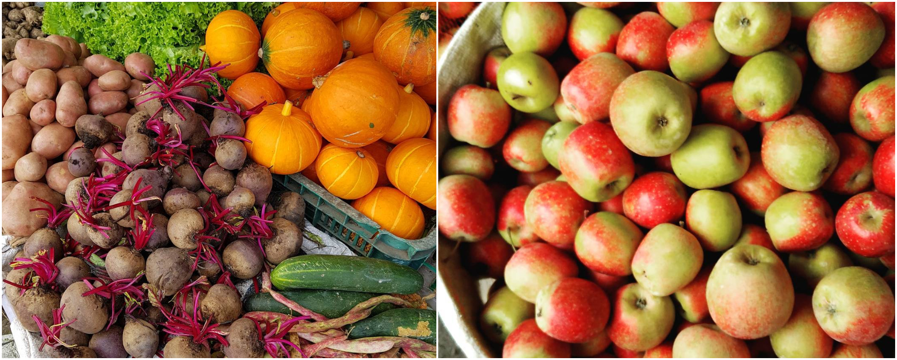
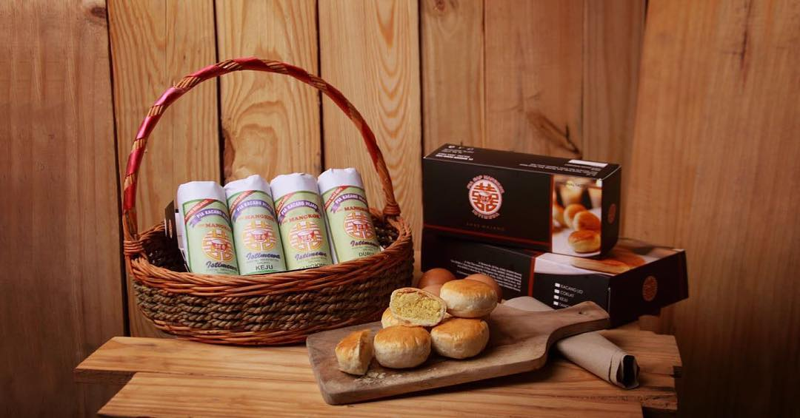

Masih banyak oleh-oleh yang bisa and beli
Mike Mike
Sangat keren pokonya sangat keren pokonya sangat keren pokonya
Mike Mike
Sangat keren pokonya sangat keren pokonya sangat keren pokonya
Mike Mike
Sangat keren pokonya sangat keren pokonya sangat keren pokonya
* Lihat Lebih Banyak Mari
Berburu Oleh-Oleh
Di Kota
Tidak afdol rasanya bertamanya kalau belom membeli oleh-oleh khas kota batu. berikut beberapa oleh-oleh khas kota
1. Olahan Telo
.jpg)
Telo dalam bahasa Indonesia artinya Ubi Jalar. Ubi jalar sejak lama dikenal sebagai olahan makanan khas pedesaan. Namun belakangan, banyak penelitian yang membuktikan bahwa ubi jalar memiliki berbagai macam manfaat untuk kesehatan.
2. Apel Murah
Di sini kamu bisa menemukan Apel Malang kualitas prima dengan harga yang sangat terjangkau. Selain buah-buahan, terdapat pula berbagai macam sayuran segar serta kios tanaman bunga yang cocok jadi latar belakang berfoto yang unik.
3. Bakpia
Berbeda dengan bakpia Jogja, pia dari kota Malang ini bagian kulit luarnya keras mirip pastry dan disebut mangkok karena bentuknya yang mirip seperti mangkok. Pia Cap Mangkok termasuk pia yang melegenda karena telah ada sejak t ahun 1959. Terdapat enam varian rasa yang bisa kamu pilih, antara lain kacang hijau, cokelat, tangkwe, green tea, keju dan durian.